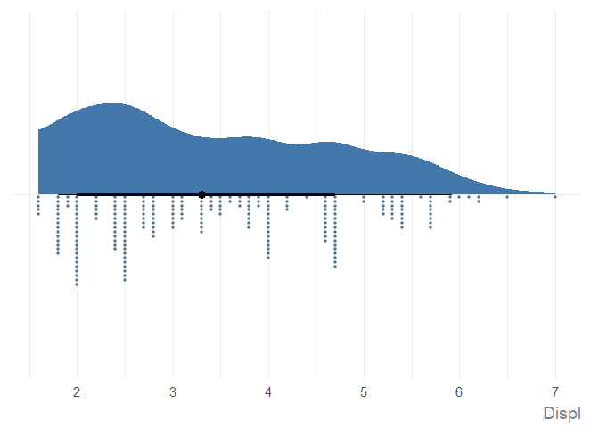

ggauto is an opinionated ggplot2 extension package to automatically choose the best chart type and styling, based on the types and values in the data. It’s based on the following three principles:
- There is no automatically perfect chart type for a given data type, but some are better than others.
- Default styling for charts should improve clarity and be as accessible as possible.
- Data pre-processing is a separate step to plotting, and you need to understand what your data is before you plot it.
Warning! If you don’t like some (or all) of the opinionated choices in this package, make a fork and create your own version. Bug reports and/or fixes are extremely welcome for things that don’t work, but stylistic changes that are personal preferences will not be addressed.
This package is built on the philosophy that data wrangling and plotting are separate parts of the process of building a chart. Tasks like ordering data, converting to correct date formats, or computing summary statistics should generally be performed before passing into a plotting function.
In terms of styling, the defaults differ from ggplot2 in the following ways:
- The use of a white background to improve contrast.
- Larger text which is aligned horizontally to improve readability.
- Improved styling for title and subtitle, including automatic text wrapping for long text.
- Colours that are more likely to be accessible, using Paul Tol’s palettes.
- Combined use of either shapes or direct labels alongside colour to improve accessibility.
- Symmetric
yaxis, when0is included in the data (for some chart types), to enable comparison. - Different chart types when users try to make spaghetti line charts.
- Unless a factor where a specific order is defined, categorical variables are arranged by magnitude instead of alphabetically.
Installation
Install from CRAN:
install.packages("ggauto")You can install the development version of ggauto from GitHub with:
# install.packages("pak")
pak::pak("nrennie/ggauto")Load the package:
Mapping data types to chart types
Variable types
The available data types are based on the scale_x/y_ options in ggplot2:
- Continuous
- Discrete (categorical)
- Date (including time and datetime)
This package assumes that you have correctly pre-processed your data i.e. is based on the assumption that you understand what the columns in your data are before you try to plot it. This means that if, for example, you have data for years encoded as numeric 2021 or "2021", you would convert it to a date object before plotting. The package also assumes that all data is in long format.
Chart types
| var1 | var2 | var3 | Chart Type | Implemented |
|---|---|---|---|---|
| Continuous | - | - | Raincloud plot | Yes |
| Continuous | Continuous | - | Scatter plot | Yes |
| Continuous | Continuous | Discrete | Scatter plot with coloured shapes | Yes |
| Discrete | - | - | Bar chart (showing count of categories) | Yes |
| Discrete | Continuous | - | Bar chart (if one value per category) or raincloud plot (if multiple values per category) | Yes |
| Discrete | Discrete | - | Heatmap (showing count of category combinations) | Yes |
| Discrete | Discrete | Continuous | Heatmap (showing continuous variable) | Yes |
| Date | Continuous | - | Line chart | Yes |
| Date | Continuous | Discrete | Line chart with coloured lines | Yes |
Examples
To use ggauto() simply pass in the data and the variable names you wish to visualise. For example, using the mpg data from ggplot2:

See the Examples vignette for more information, including different chart types, how to edit chart text, and different ways to pass in data.